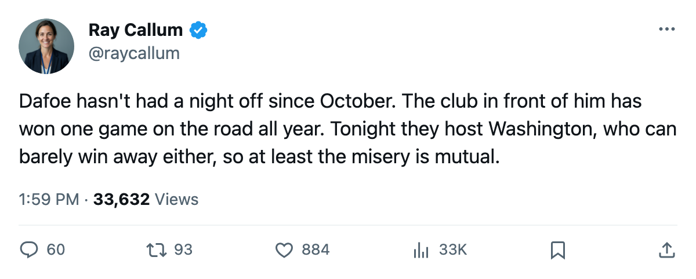

Goalie Watch: Dafoe Has Started 18 of 22, and Atlanta Is 1-10 on the Road
The Thrashers sit last in the East, and the gap between what they do at home and what they do on the road is the widest in the league.
 Ray CallumSenior correspondent · Home Ice Network
Ray CallumSenior correspondent · Home Ice Network
 Byron Dafoe79 has started 18 of
Byron Dafoe79 has started 18 of  Atlanta Thrashers's 22 games, an 82% workload.
Atlanta Thrashers's 22 games, an 82% workload.  Milan Hnilicka75 has the other 5 starts. No third goaltender has dressed for a Thrashers game this season.
Milan Hnilicka75 has the other 5 starts. No third goaltender has dressed for a Thrashers game this season.
Atlanta Thrashers sits last in the Eastern Conference at 16 points. The 6-5 home record fits a team near the bottom. The 1-10 on the road does not fit any team.
Atlanta's 1 road win is the fewest in the league.  Los Angeles Kings has 2,
Los Angeles Kings has 2,  Phoenix Coyotes has 3. The Thrashers have won 6 of 11 at home and 1 of 11 away. The gap between those two lines is the widest in the standings.
Phoenix Coyotes has 3. The Thrashers have won 6 of 11 at home and 1 of 11 away. The gap between those two lines is the widest in the standings.
The injury ledger is part of the reason. Atlanta Thrashers carries 14 injury spells and 178 days lost this season, the 3rd-highest days total in the league behind  New York Islanders and
New York Islanders and  Vancouver Canucks. Four men are on the shelf right now:
Vancouver Canucks. Four men are on the shelf right now:  Patrik Stefan74 (ankle, out until December 3),
Patrik Stefan74 (ankle, out until December 3),  Andy Sutton70 (arm, out until December 16),
Andy Sutton70 (arm, out until December 16),  Andre Roy68 (arm, out until January 20), and
Andre Roy68 (arm, out until January 20), and  Yannick Tremblay67 (leg, out until December 28). Two defensemen, a center, and a winger.
Yannick Tremblay67 (leg, out until December 28). Two defensemen, a center, and a winger.
Tonight's opponent has the same road problem
Atlanta Thrashers hosts  Washington Capitals tonight. Washington Capitals is 4-9 on the road, 6-13-3 overall, sitting at 19 points in the Southeast Division. The Art Ross winner
Washington Capitals tonight. Washington Capitals is 4-9 on the road, 6-13-3 overall, sitting at 19 points in the Southeast Division. The Art Ross winner  Jaromir Jagr90 carries a neck designation with a return date of today, making him eligible to dress for the first time in two weeks.
Jaromir Jagr90 carries a neck designation with a return date of today, making him eligible to dress for the first time in two weeks.  Olaf Kolzig89 has started 19 of 24 for Washington, a 79% share of his own workload.
Olaf Kolzig89 has started 19 of 24 for Washington, a 79% share of his own workload.
These clubs met once before this season. Washington Capitals won 3-2 on the road.
The Thrashers have 60 games left. At 1 point per road game, they will not climb out of the conference cellar at that rate.
